第 8 轮：统一点线、合并连线、排版控件、知情视角
第 7 轮你定了 3D 先不做（决定 18）、知情视角第一版就做（决定 19），并在备注里提了画法上的要求（决定 20）。这一轮都做进了关系图，问两道题（17、18）。
第 7 轮：按你的五条意见继续打磨图
第 6 轮两题你按推荐答了（决定 15、16），并在备注里提了五条（决定 17）：要不要 3D、节点能否拖拽、选中后降暗其他节点、收起右侧栏后画布不重绘、参考 viewer-v7 再优化。这一轮逐条做了，问两道题（15、16）。
第 6 轮：图改用 Sigma.js 重做
第 3 到 5 轮的五道题你都按推荐答了（Task README 决定 9 到 13）。另外你在会话里说现在的图很乱：没有像样的自动排版，节点和文字大多挤在一起，要深入打磨，直接用 Sigma.js（决定 14）。这一轮把关系图、全书图（按章节、按关联）和人物卡里的小关系图都换成 Sigma.js 重做，问两道题（13、14）。
第 5 轮：剩下五页，以及平板、手机宽度
第 4 轮的三道题（9、10，以及第 3 轮的 8）还没答，等答复期间先把计划里剩下的部分做完：数值、悬念、时间线、情节、原文五页，人物卡记录“在主区打开”的宽表格，以及平板、手机宽度。这一轮新问两道题（11、12），第 4 轮的内容在下面原样保留。
第 4 轮：图、段落级的阅读位置、成百上千条记录
第 3 轮你定了版式可以往下细化，另提了三点（Task README 决定第 8 条）。这一轮按这三点改了稿子：读到哪里可以精确到段；人物卡改成页签，记录按几百条的量级做了筛选、搜索和按章分组；加了“关系图”和“全书图”两页，人物卡里也有一张小关系图。数据仍是“读到第 38 章”的真实样本。
画图用的是 Cytoscape.js（MIT 许可，成熟，样式和布局多，几千个点还流畅），只装在草稿 worktree 里。读到第 100 章、要画上万个点时，再看要不要换成用 WebGL 画的库（例如 Sigma.js）。
第 8 轮的改动（不用答）
| 你的要求 | 做了什么 |
|---|---|
| 线一样粗，认知不用弧线，多种联系合并或平行 | 所有线一样粗，多少写在线上的字里。一对点之间的关系说法、同场、认知合并成一条直线：蓝色表示有关系说法，粉色表示只有认知，灰色表示只有同场；认知用箭头标方向，从知道的人指向被知道的人，两边都知道就是双向箭头。线上平时只写关系词（姐妹、朋友……），悬停或选中时写全，例如“朋友（说法 71）· 同场 34”。线上的字互相避让，不再叠在一起。合并和平行线二选一见第 17 题。 |
| 点一样大，选中效果参考 viewer-v7 | 点都一样大，主要人物只是名字加粗。名字改成 v7 那样带描边的文字，不再用底色块。选中时圈加粗、填上淡的类型色、外面一圈同色光晕，其余降暗。 |
| 排版做成控件，切换连线层时重新排版 | 工具栏第二行加“排版”：力导向、同心（以选中的人为中心，一圈是一跳邻居）、环形（同类挨着排成一圈，名字朝外），旁边一个“重新排版”按钮。切换连线的层（关系说法、同场、认知）或同场门槛时，按新的线重新排，点从原位置滑到新位置，看得出谁挪到了哪里。默认排法见第 18 题。 |
| 知情视角（决定 19） | 工具栏第二行加“视角”：读者、苏天晴、南嘉鱼、南小风、花铃。换成某个角色时，只按他知道的身份秘密合并化名，只画他知道（含听说、认为）的说法；读者知道、他不知道的“同一人”用黄线连着，写“其实是同一人”。图上方一行写明这个视角少了哪些说法、不知道哪些身份。 |
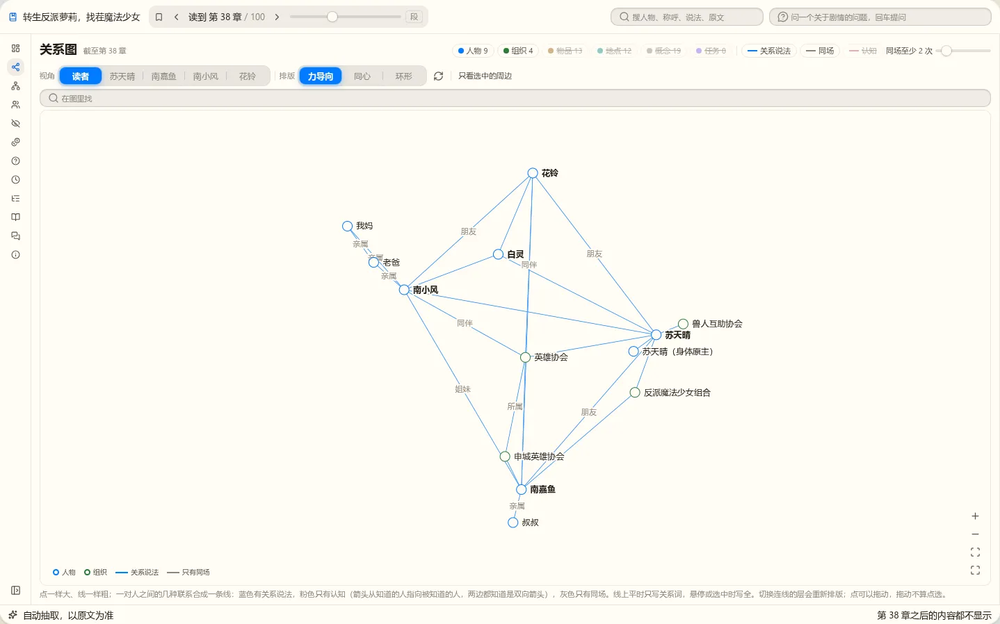
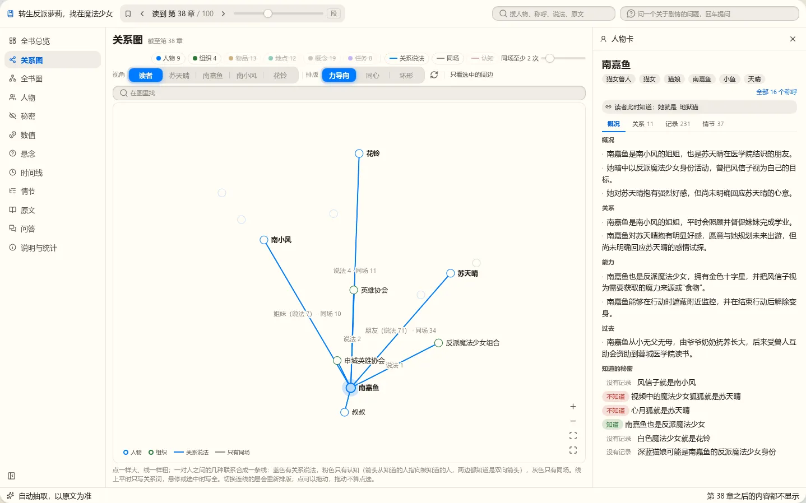
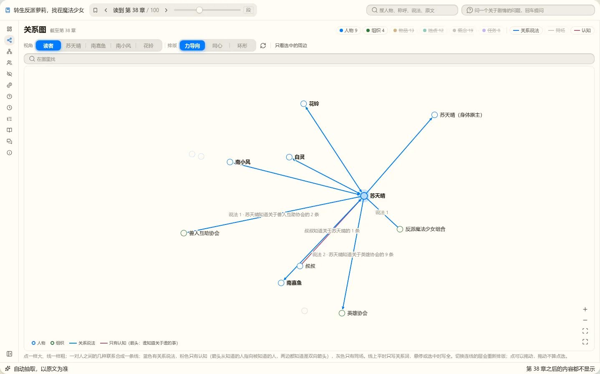
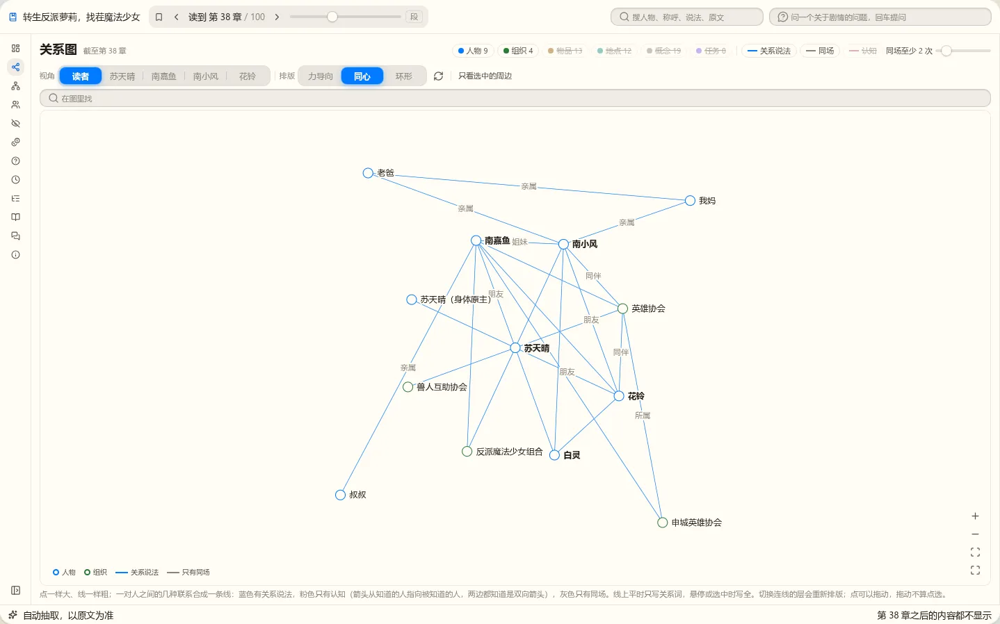
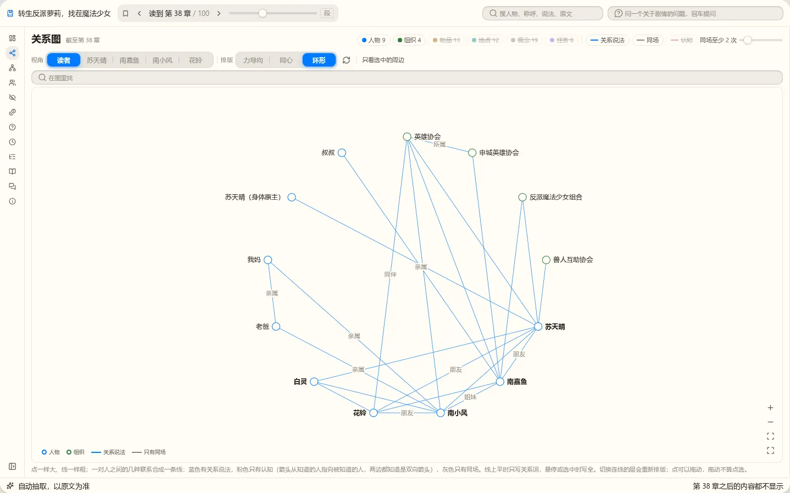
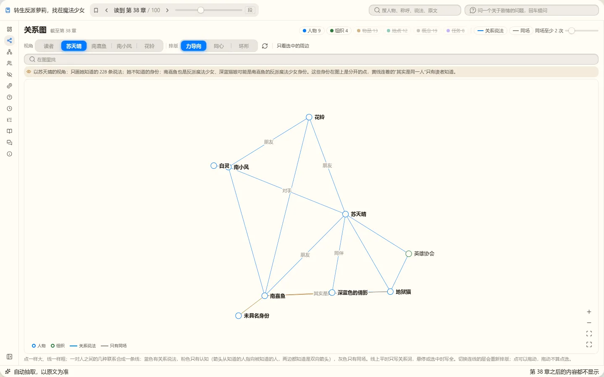
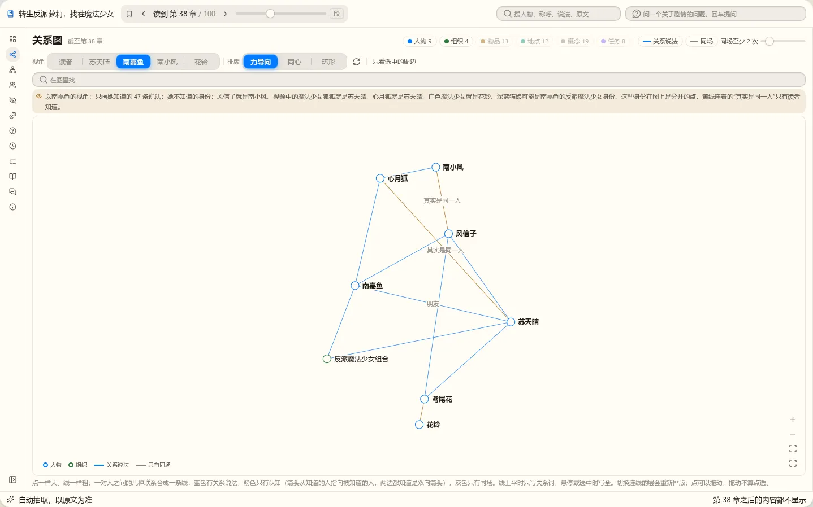
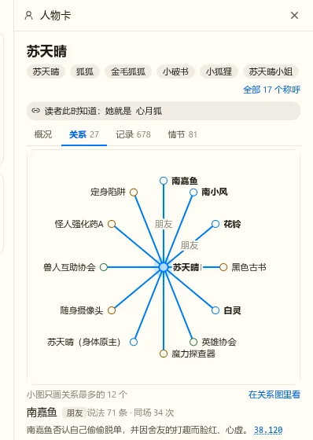
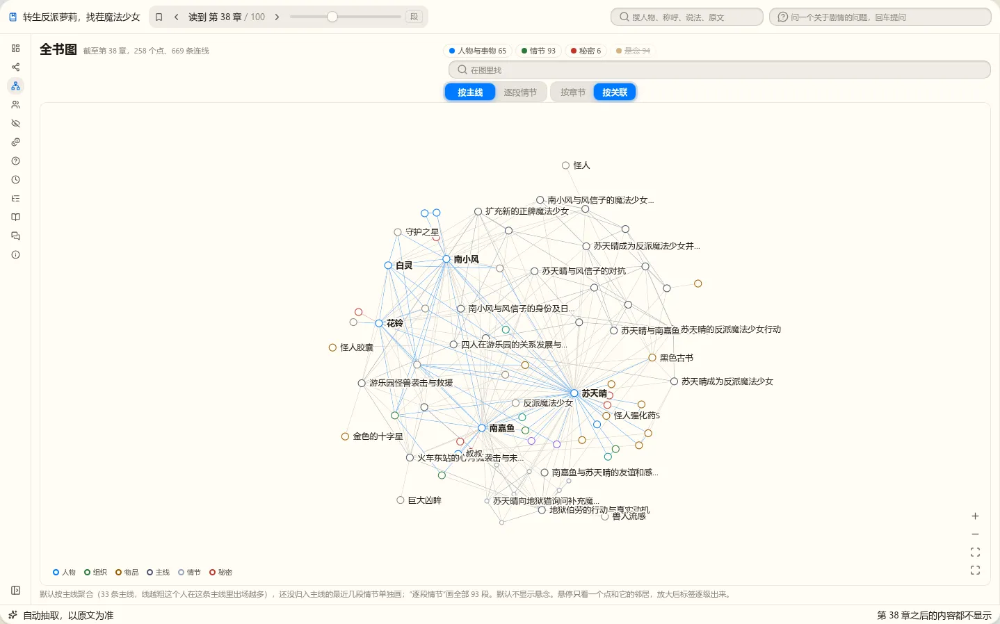
待定17. 一对点之间有几种联系时，合并成一条线，还是画成平行的几条？
你给了两种做法。稿子做的是合并（见上面几张图）。平行线是 viewer-v7 的做法：关系说法一条、认知一条（各带颜色），并排分开画。
合并成一条
颜色按最要紧的一种（关系说法 > 认知 > 同场），认知用箭头标方向，线上的字写全几种联系。
平行的几条
每种联系一条、各自的颜色，并排分开；A→B 与 B→A 的认知也分成两条。
待定18. 关系图默认用哪种排版？
三种都能随时切换，这里定第一次打开时用哪种。
力导向
关系近的排在一起，能看出小团体；每次排出来一样。
同心
以主角（或选中的人）为中心，一眼看出离她几跳。
环形
最整齐、不重叠，但线在圈里交叉多。
第 8 轮搭稿时发现的问题（不用答，记下来进计划）
- 知情视角分不清“不知道”和“没有记录”。以南嘉鱼的视角，“风信子就是南小风”没有任何记录，规则只能当她不知道；可她是南小风的姐姐，原文也许只是没写到。视角图要能区分“明确不知道”（秘密矩阵里的“不知道”）和“没有记录”：后者可以用虚的黄线标“可能知道”。
- 只在一列里的化名，哪些算公开。南嘉鱼一列有四个对象（猫女兽人、地狱猫、深蓝色的倩影、一个未具名身份），只有两对写成了身份秘密。稿子里规则是：没写成秘密的合并一律当作别人不知道（只有本人知道），所以以苏天晴的视角南嘉鱼裂成四个点。抽取时要么把每个化名关系都写成身份秘密，要么标明哪些是公开的。
- 没有名字的身份。有的化名对象读到这里还没有名字，抽取只给了一句描述，图上写成“未具名身份”。
第 7 轮的改动（不用答）
| 你的意见 | 做了什么 |
|---|---|
| 1. Sigma 有没有 3D | Sigma 只画平面图。3D 改用 3d-force-graph（three.js 加 d3-force-3d，MIT）做了一个，在关系图右上角“平面 / 3D”切换；要不要进第一版见第 15 题。 |
| 2. 节点能否拖拽 | 能。按住一个点拖动，松开后留在那里（只在这次浏览里）；拖动不算点选，不会拖完就打开人物卡。3D 里也能拖。 |
| 3. 选中后降暗其他节点 | 改了：选中和悬停一样，只留这个点和它的邻居，其余淡到背景色、不出名字，不相连的线隐藏。另加“只看选中的周边”：勾上后其余的点直接隐藏，镜头框住这一圈。 |
| 4. 收起右侧栏后不重绘 | 修了。原因是 Sigma 只在窗口尺寸变化时重设画布，容器变宽它不知道；现在监听容器尺寸，变了就重设画布再重画。拖分隔条、全屏也一样。故事线同样修了。 |
| 5. 参考 viewer-v7 再优化 | 借了四样：点画成类型色的空心圆圈（主要人物的圈更粗）；连线分层、各自开关（关系说法、同场、认知）；“认知”是 v7 的“认知联系”：粉色弧线箭头，A→B 表示 A 知道关于 B 的事，越粗条数越多，A→B 与 B→A 各弯向一边；全屏按钮。v7 的“知情视角”（以某个角色知道的为准看图）还没做，见第 16 题。 |
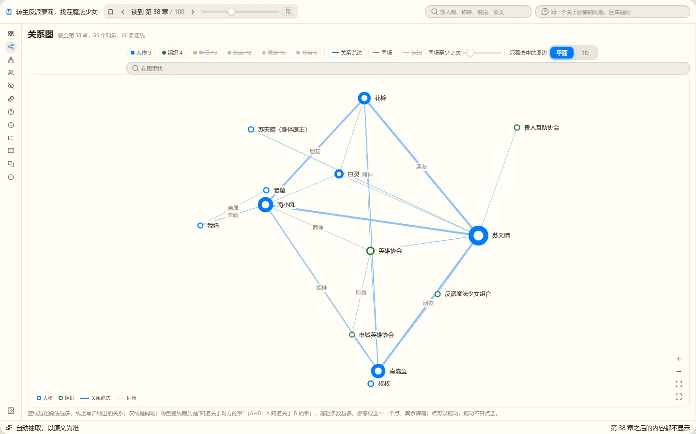
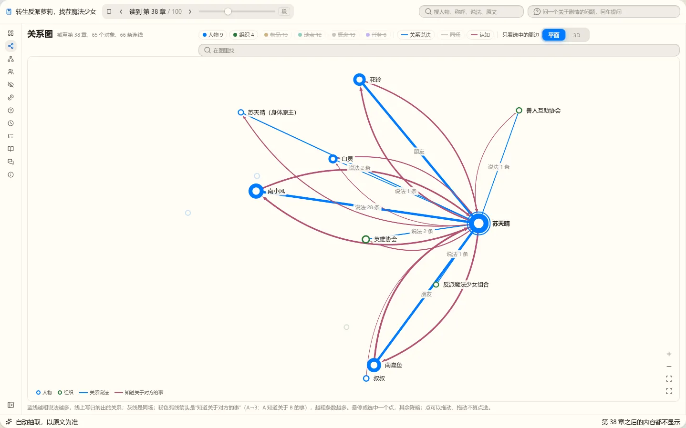
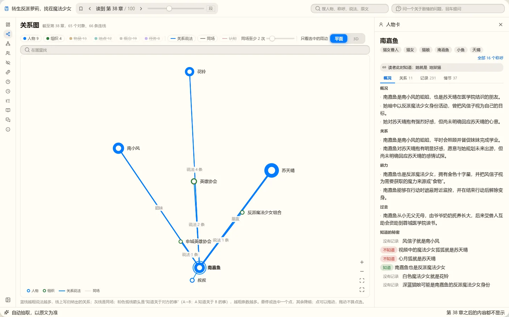
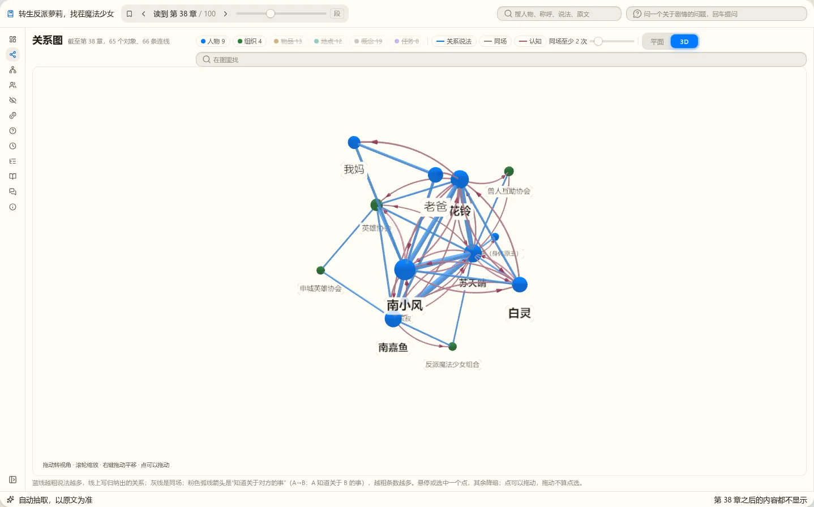
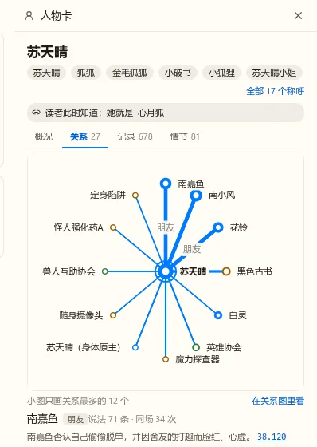
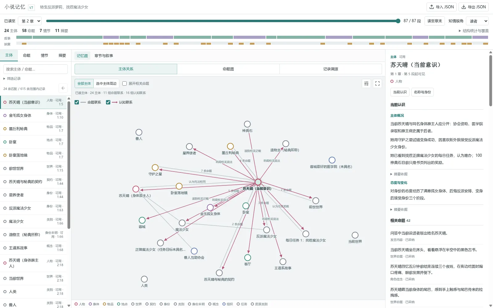
已定15. 3D 图要不要进第一版？
在 Lab 的 NbStoryDraft 场景 graph-3d 里可以直接转着试（http://127.0.0.1:4217/）。3D 多带一个 three.js（压缩后约 180 KB），图本身的数据与平面图共用。
第一版只做平面，3D 以后再看
草稿留着，等平面图用起来再决定。
第一版就带上，作为关系图的可选视图
默认平面，右上角切 3D。
不做 3D
删掉草稿。
已定16. 关系图要不要加“知情视角”？
viewer-v7 顶部能选“知情视角”：读者，或者某个角色。按角色看时，图只画这个角色知道的事。例如以南嘉鱼的视角，她不知道心月狐就是苏天晴，图上心月狐和苏天晴是两个点；她不知道的关系说法也不画。现在的图都是读者视角。
第一版就做，先放在关系图上
关系图右上角一个“以谁的视角”选择，默认读者。人物卡、秘密矩阵以后再跟。
以后再做
第一版只有读者视角。
第 7 轮搭稿时发现的问题（不用答，记下来进计划）
- “认知”一层集中在主角身上。人物之间 30 条认知联系里，一半以上进出苏天晴（她是视角人物）。线一多就成扇形，所以这一层默认关着，悬停一个人时再看最清楚。
- 拖动后的位置要不要记住。草稿里拖动只在这次浏览里有效，刷新就回到自动排版。实现时可以按书、按阅读位置记住用户拖过的点，下次打开沿用；这与“拖读到哪里时图会重排”（第 6 轮问题 3）一起考虑。
- 3D 的数据和平面图共用一份。如果以后做 3D，组件只换画法，查询不变。
第 6 轮的改动（不用答）
换成 Sigma.js（WebGL 画点和线，几千个点也流畅），排版用 graphology 的 ForceAtlas2 加 noverlap。具体打磨了这几处：
- 先少画：关系图默认只画人物与组织（13 个），物品、地点、概念、任务按开关加进来；以前一次画 65 个，概念、任务这类点把人挤在中间。
- 排版不重叠：先用力导向拉开结构，再把点推开到互不重叠；推的时候按标签宽度给要显示名字的点留位置。初始位置按权重确定地摆开，同样的数据每次排出来一样。
- 文字分级：点少时名字全显示；点多时按格子去重，同一格只出最大的点的名字，放大后逐级出来。名字带底色，不会被线压住。
- 线上写关系：线上横排写归纳出的关系（姐妹、朋友、亲属、同伴、所属），线越粗说法越多；只有说法、没有关系词的线，悬停时才写“说法 N 条”。
- 悬停聚焦：悬停一个点，只留它和它的邻居，其余淡到背景色；打开人物卡时选中的人加粗、邻居出名字，但不把别的点淡掉。
- 在图里找、缩放：搜索命中的点高亮，镜头移过去；右下角放大、缩小、铺满。
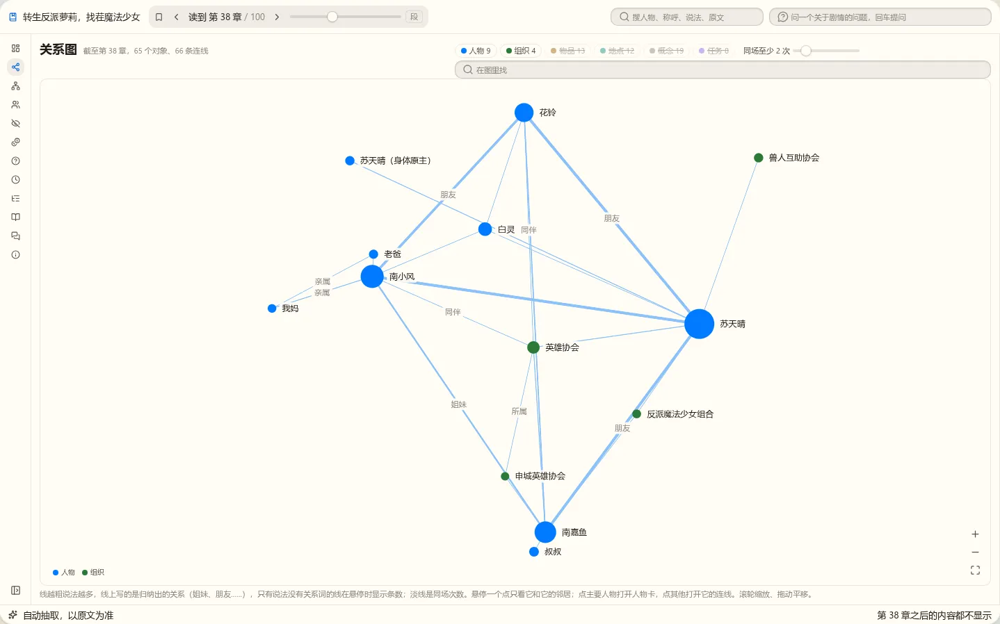
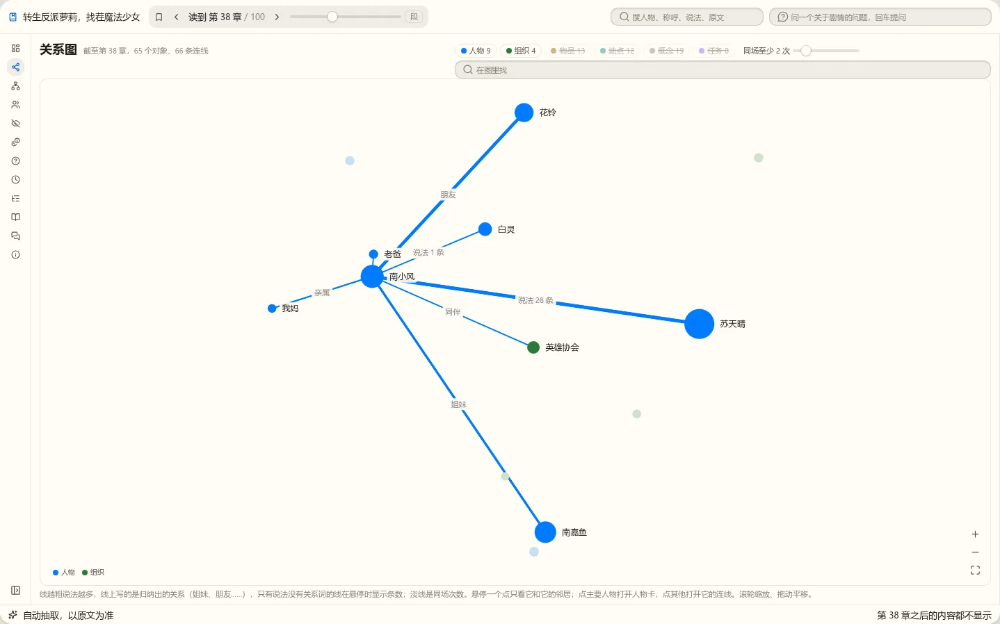
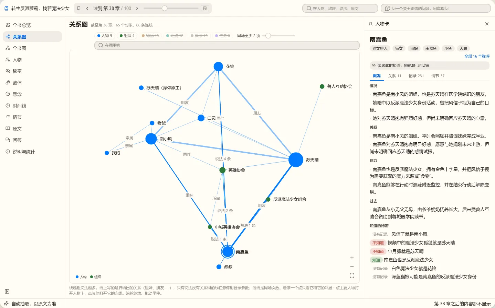
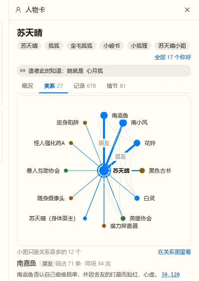
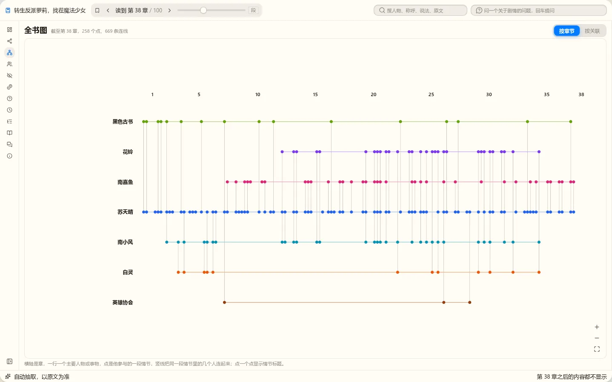
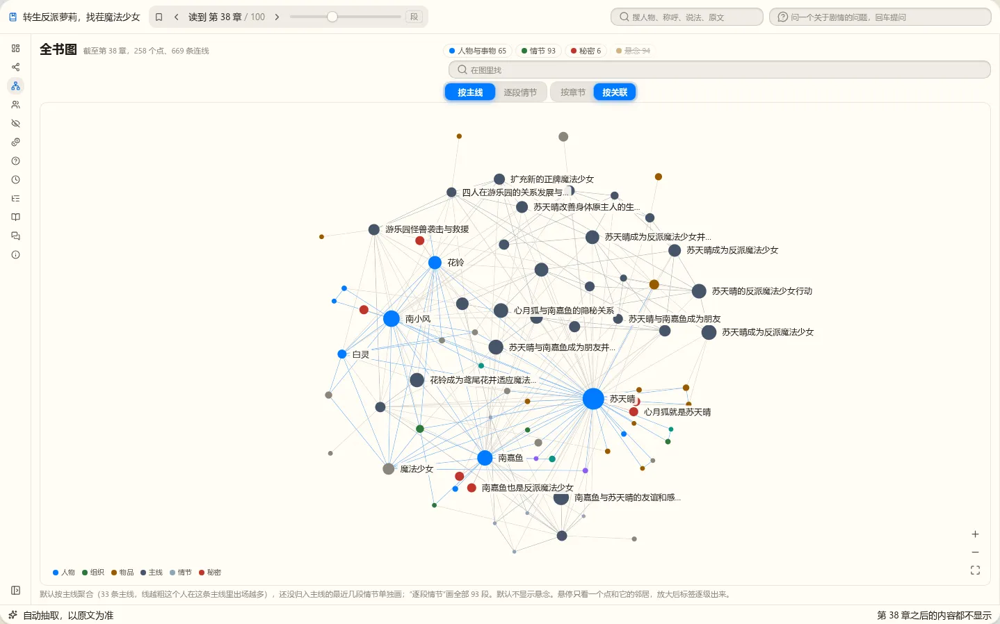
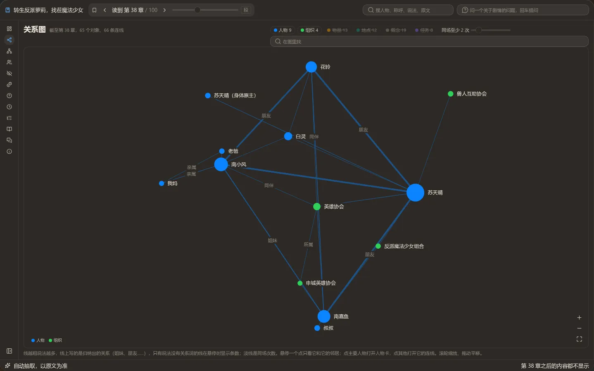
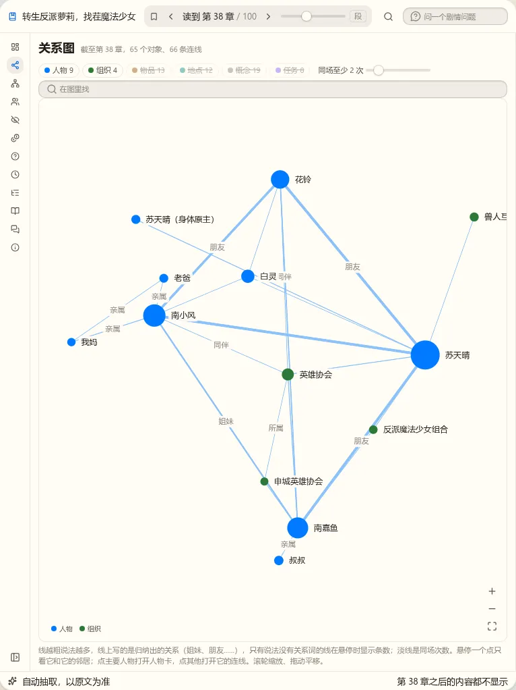
已定13. 关系图默认画哪些点？
读到第 38 章有 65 个对象：人物 9、组织 4、物品 13、地点 12、概念 19、任务 8。全画出来概念和任务会把人挤在中间（第 4 轮的图）。
默认只画人物与组织，其余按开关加
就是现在的稿子。类别开关记住上次的选择。
人物、组织，加上常出场的物品
出场多的物品（例如会说话的黑色古书、苏天晴的手机）默认也画。
全部都画
靠标签分级和悬停聚焦去看清。
已定14. 全书图“按关联”默认按主线聚合，还是逐段情节？
93 段情节几乎每段都有苏天晴，逐段画时所有情节都挂在她身上，排出来是一个均匀的球，看不出结构；按 33 条主线聚合后能看出哪几条主线围着哪几个人。
默认按主线，可切到逐段情节
还没归入主线的最近几段情节照常单独画。
默认逐段情节，可切到按主线
点最全，靠搜索和悬停去找。
第 6 轮搭稿时发现的问题（不用答，记下来进计划）
- 关系词大多归纳不出来。66 条关系线里只有 14 条能从说法的分类里拼出关系词：亲属类说法里有“姐妹”就写姐妹，社交类说法里出现“朋友、同桌、同伴……”就写它，所属类写“所属”。其余 52 条只能写“说法 N 条”。第 4 轮问题 1 的根子还在：记忆图要给每对人归纳“是什么关系”，并随读到哪里变化。
- 会说话的物品被归为物品。黑色古书（墨丘利秘典）会和主角对话、发任务，实际是个角色，但抽取把它归为物品，默认的关系图里就没有它（人物卡小图里有）。要么抽取时把“能说话、会行动”的对象归为角色，要么界面允许把某个对象钉到关系图上。
- 拖读到哪里时图会重排。每个阅读位置单独排版，拖滑块时点会跳。实现时用上一个位置的坐标作为下一次排版的起点，只让新出现的点找位置。
- Sigma 4.0 刚发布。草稿用的是稳定的 3.0.3；4.0.0 是 2026-10-08 发的、10-14 已到 4.0.2，接口有变化。实现时再看要不要直接上 4。
第 5 轮的改动（不用答）
数据仍是“读到第 38 章”的真实样本。每页都按几百条的量级做：能筛、能搜、默认最近的在前，实现时长列表都用虚拟滚动。
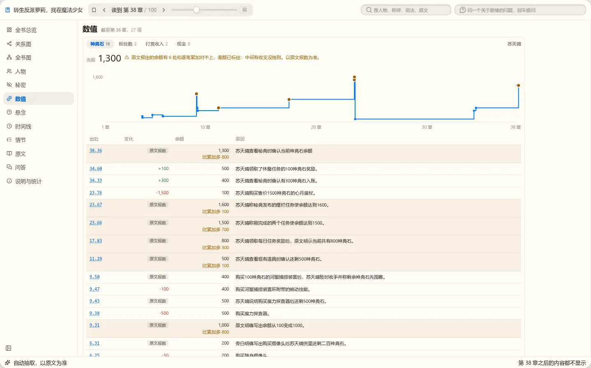
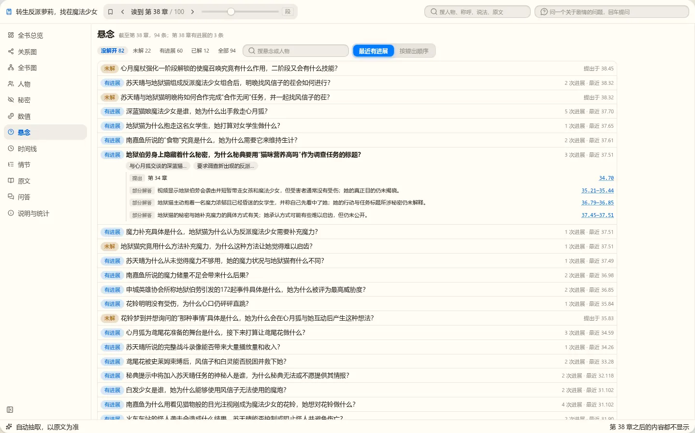
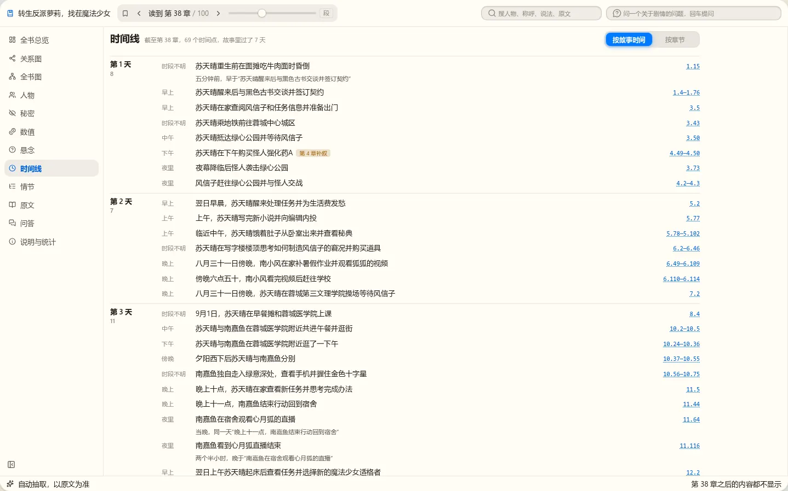
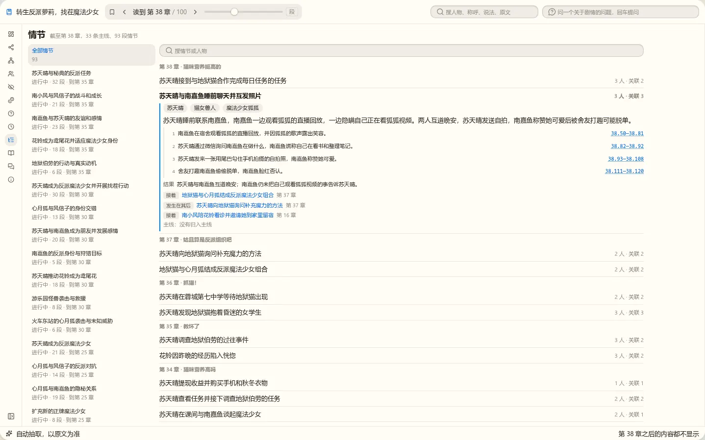
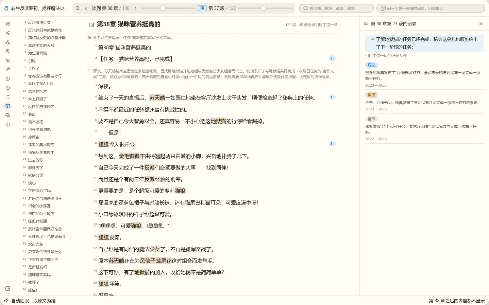
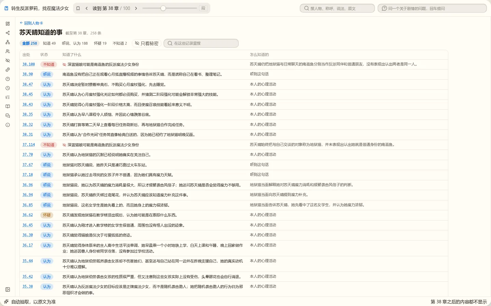
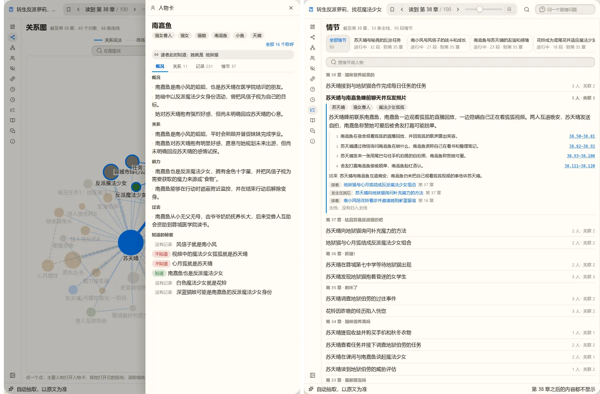
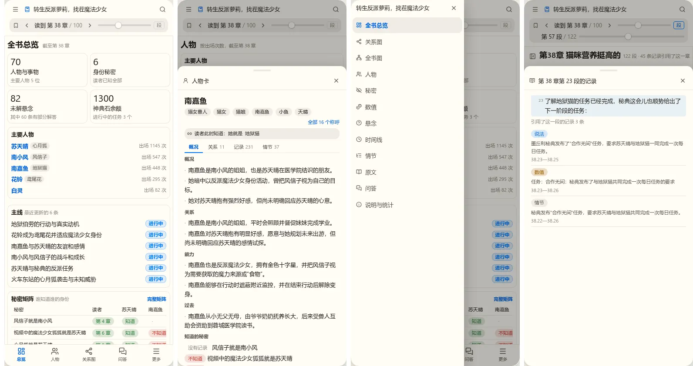
已定11. 手机宽度要不要进第一版？
上面的手机稿说明版式能收进手机，但真做出来还要处理触屏上的图（双指缩放、点选）、局域网访问（独立服务跑在电脑上）和一套手机宽度的检查。平板宽度只是收起导航、抽屉改浮层，代价小。
第一版做宽屏和平板，手机后做
代码按三档宽度写（手机档先能显示、不保证好用），手机的触屏交互和局域网访问放到下一版。
三档都进第一版
手机上图页也要能用；第一版的工作量和检查范围都更大。
已定12. 原文报的余额和逐笔累加对不上时怎么显示？
神典石 18 笔里有 6 处，原文直接写出的余额比抽到的收支逐笔累加多出 100 到 800（例如第 38 章原文说余额 1300，累加只有 500）：中间有任务奖励没抽到。现金第一笔就是支出，起始金额不明。
以原文报数为准，标出差额
余额跟着原文报数走；对不上的那一笔标黄，写“比累加多 800”，页顶提示有几处对不上（就是现在的稿子）。
只显示原文报数
余额只在原文报数处显示，中间的收支只列变化、不算余额；不提示差额。
只显示逐笔累加
余额全按累加算，原文报数只当一条说明。
第 5 轮搭稿时发现的问题（不用答，记下来进计划）
- 收支漏抽。见第 12 题：神典石有 6 处原文报数比累加多，多半是任务奖励入账没抽到。抽取要么补“任务完成即入账”，要么编译时用原文报数对账并留下差额记录。
- 最近几章还没归入主线。主线是隔几章归纳一次的，读到第 38 章时最新的主线只到第 35 章，第 36 到 38 章的情节显示“没有归入主线”。界面要写明“第 36 到 38 章还没归入主线”，或者编译时让主线跟到读到的那一章。
- 显示名取哪个称呼。稿子里取的是“读到这里时第一个出现的称呼”，南嘉鱼的化身因此显示成“猫女兽人”。显示名要有规则：例如读到这里时用得最多的称呼，或者读者已知的身份名；没有名字的对象（“与心月狐交谈的深蓝猫娘”）才用描述。
- 时间线有 3 个点不知道是哪天。放在最后的“日子不明”一组；判断补叙时不算它们，否则会把前面的点都误判成补叙。
第 4 轮的改动（不用答）
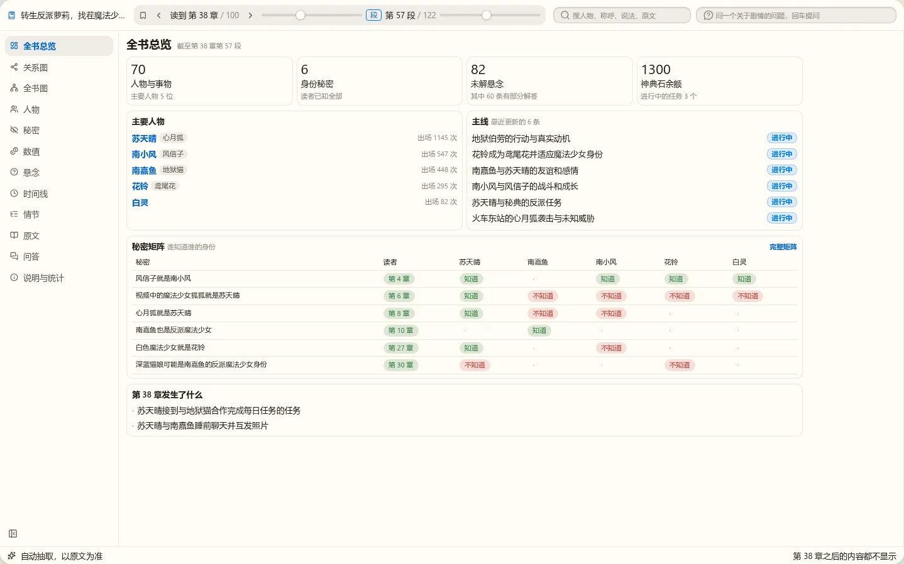
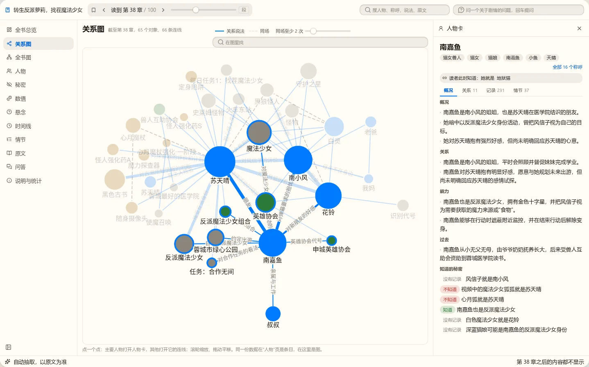
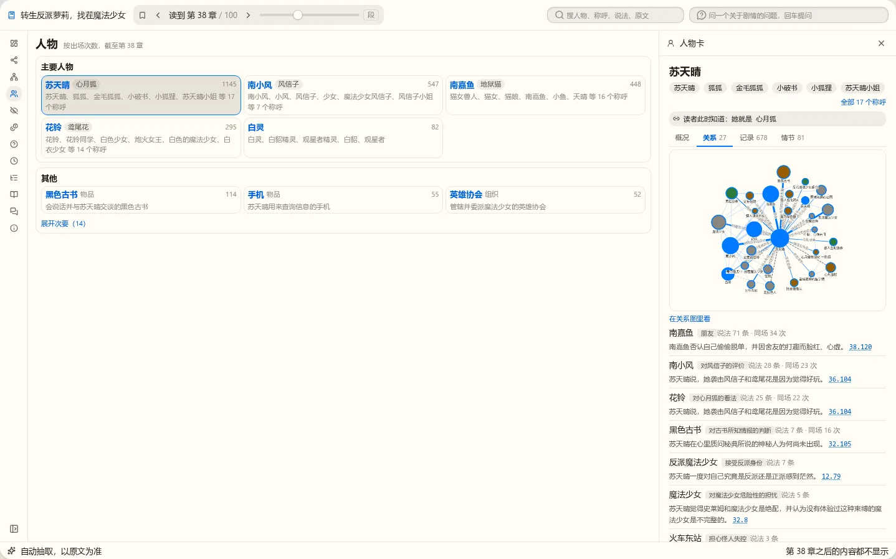
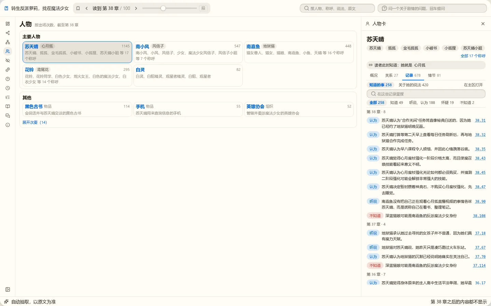
已定9. 全书图怎么排？
“整个数据结构用一张图展示”有两种排法。读到第 38 章是 258 个点、669 条连线；读到第 100 章约 700 个点、几千条连线。
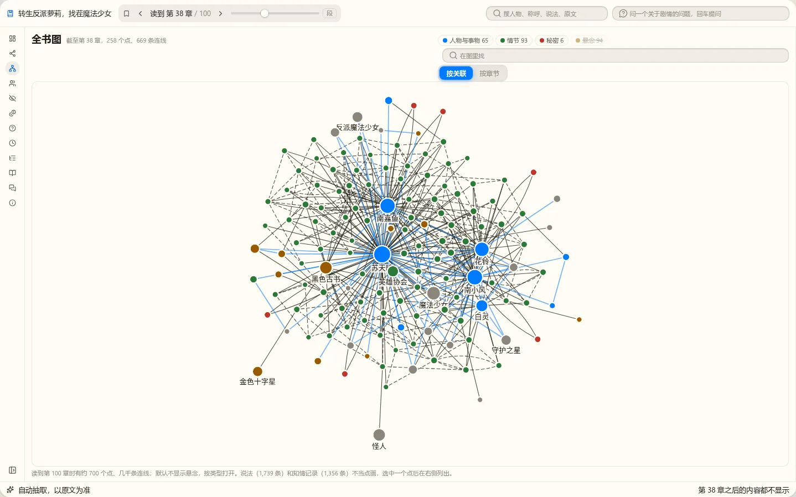
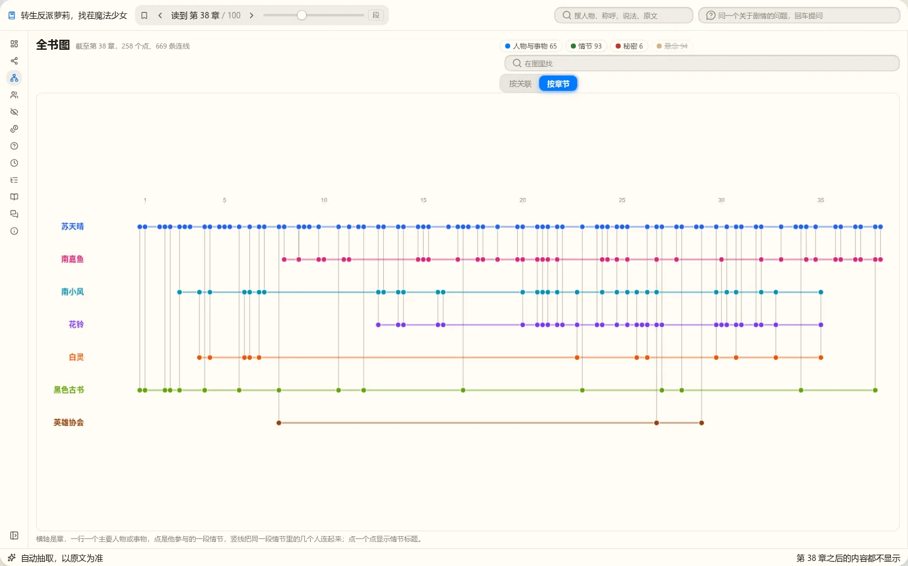
两种都要，默认按章节
页面上一个切换；先给最好读的，想看关联再切。
两种都要，默认按关联
先看全貌，再切到时间线。
只要按关联
故事线以后再说。
已定10. 人物卡分页签，还是一长页？
记录上千条以后，人物卡一长页往下翻就到不了底。上面两张人物卡的图是分页签的做法：概况（含知道的秘密）、关系、记录、情节，页签上带条数。
分页签
默认停在“概况”；从别处点进来时直接停在对应的页签（例如从关系图点进来停在“关系”）。
一长页，各节折叠
各节标题带条数，默认只展开概况；展开的节在抽屉里各自滚动。
已定8. 问答的答案怎么呈现？
现在的答案是模型写的一大段文字（见上面问答页那张图）：结论一段，之后每个人物一段，编号夹在句子里。“谁知道什么”这类题一屏看不完，也很难对照。要改的话，作答规则要让模型按固定格式输出，属于问答核心的改动，要随问答回归一起测。
保持长文
结论加底色放最上面，其余照原样；编号做成可点的链接（就是现在的稿子）。
结论加表格，长文收起
“谁知道什么”的题，答案先给结论，再给一张表：一行一个人，列是“知道吗”（知道、不知道、原文没有表明）、“怎么知道的”、依据编号；模型的完整说明收在“展开说明”里。其他题型（概括、关系）仍是结论加分点。
第 4 轮搭稿时发现的问题（不用答，记下来进计划）
- 关系线上的字不是“关系”。图里南嘉鱼和苏天晴之间写的是“朋友”，但南小风和苏天晴之间写的是“对风信子的评价”：抽取只给每条说法起了短标签，没有“两人是什么关系”这一项。要在图上写出“姐妹”“朋友”“对手”这类关系，得在抽取或编译时给每对人归纳一个关系（随读到哪里变化），这是记忆图要补的东西。
- 同名的两个对象。关系图里有两个“苏天晴”：主角和“这副身体的原主人（也叫苏天晴）”。名册与图要能区分同名对象（显示描述或编号）。
- 人物卡里的小关系图太挤。苏天晴有 27 个关系对象，小图里字看不清；实现时小图只画关系最多的十来个，其余在下面的列表里。
已定7. 整体版式能不能按这个往下细化？
顶栏：书名、读到第几章（上一章、下一章、拖动条）、搜索、提问框。左侧导航十项，能收成图标条；右侧抽屉放人物卡或原文，点名字、点“章.段”编号就打开。三栏之间的分隔条能拖，拖过头就收起。底栏常驻“自动抽取，以原文为准”。
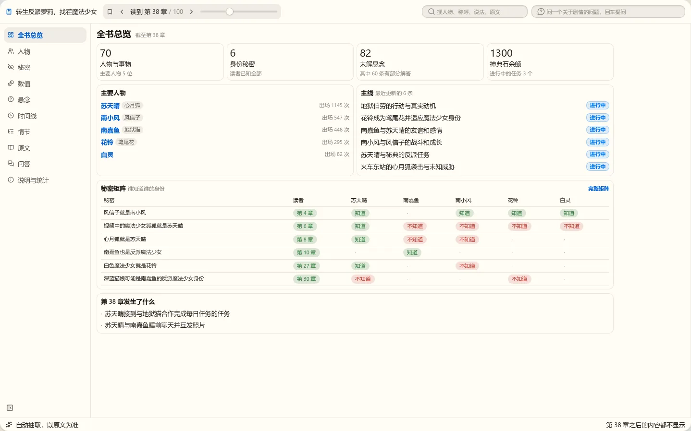
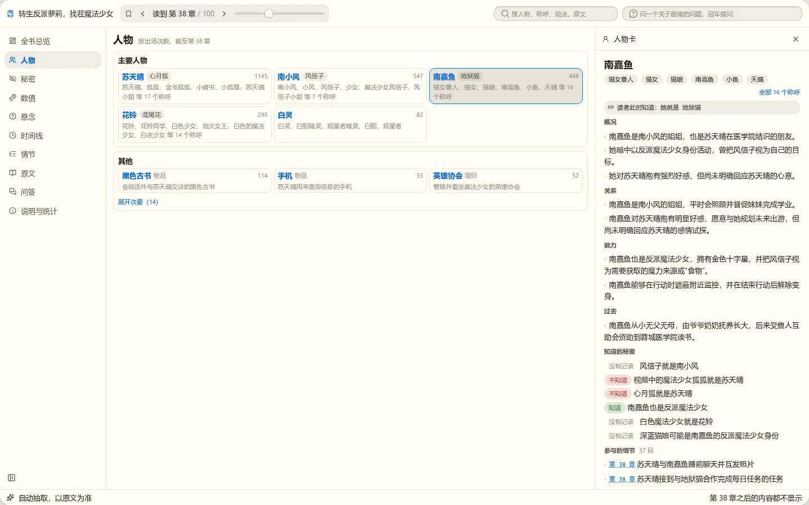
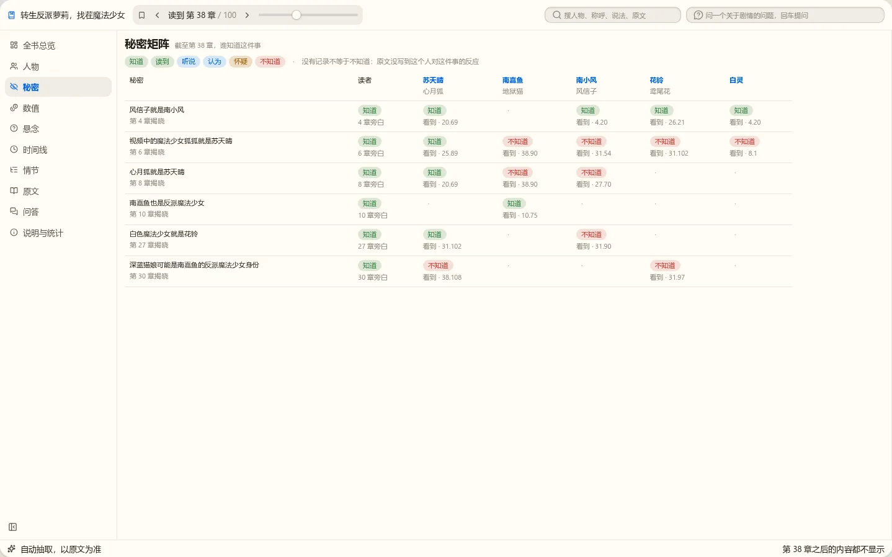
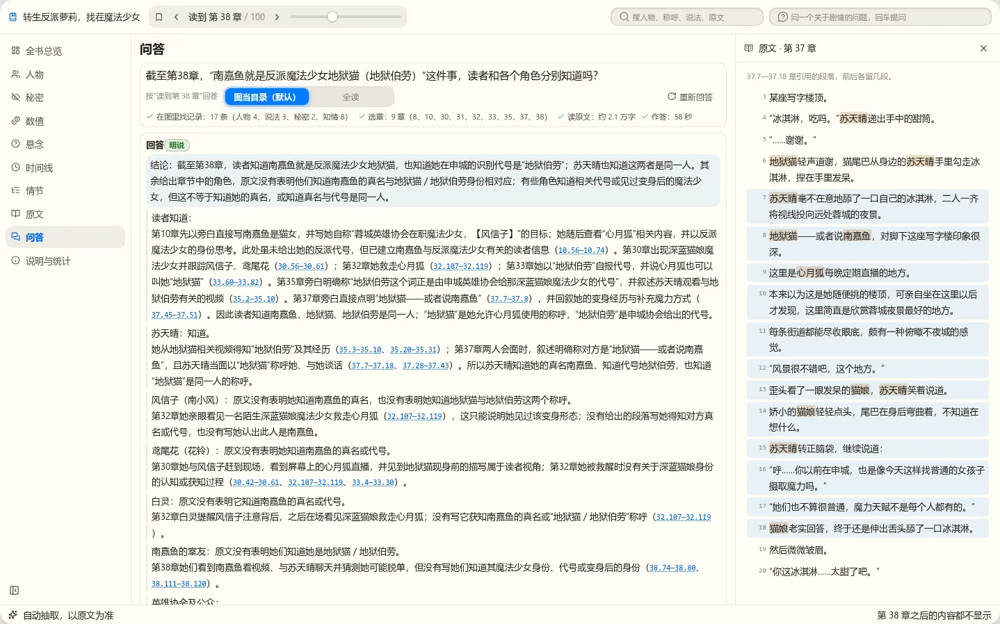
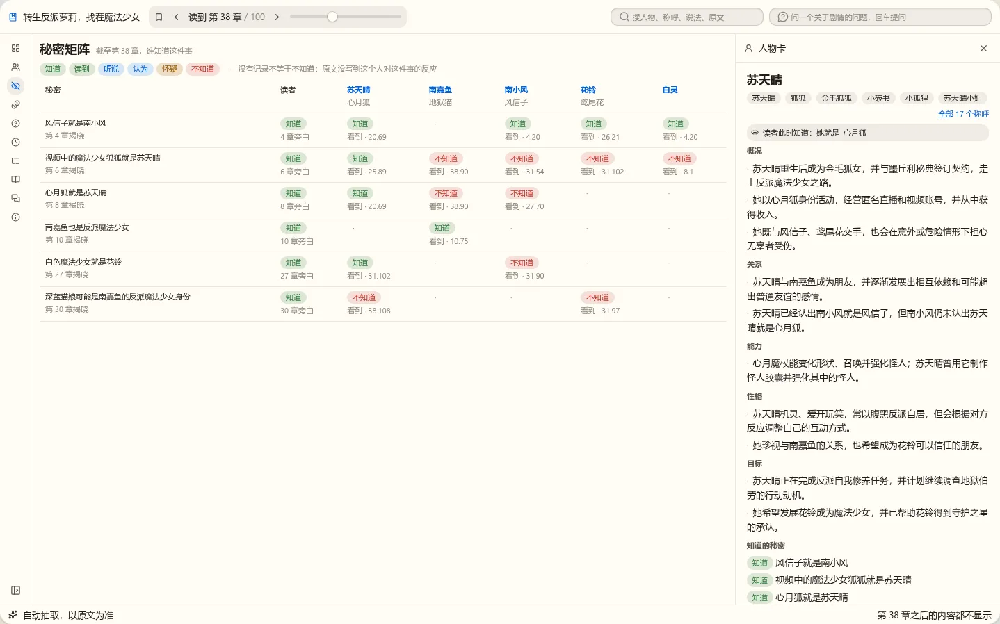
可以，按这个往下细化
下一轮补数值、悬念、时间线、情节、原文五页和窄宽度（手机、平板）的样子。
版式要改
在备注里写要改哪里，下一轮先改版式。
第 3 轮搭稿时发现的问题（不用答，记下来进计划）
- 秘密矩阵和问答会说法不一。矩阵按图里的知情记录画：“南嘉鱼也是反派魔法少女”这一行，苏天晴那格没有记录；同一本书、同样读到第 38 章，问答（读原文作答）说苏天晴在第 37 章当面叫她“地狱猫”，是知道的。矩阵的格子来自抽取，问答来自原文，抽取漏记时两边就对不上。实现时矩阵的每一格要能点开依据；“没有记录”的格子提供“问一下”，把这一格当问题交给问答。
- 主要人物要把化名合并成一个人。图里“苏天晴”和“心月狐”是两个对象，要按“读者此时知道的同一身份”合并成一列、一张人物卡；读到第 8 章以前，读者还不知道心月狐就是苏天晴，就不能合并。稿子里是手工合并的，实现时要由核心库按读到哪里算。
- 章节选择不能露出后面章节的标题。后面章节的标题本身可能剧透，选章时只显示已读章节的标题，后面的只显示章号。
- 抽取出来的称呼里有噪音。例如南嘉鱼的称呼里有“天晴”。人物卡默认只显示前 6 个称呼能挡住大部分，根上要在抽取时修。
已定6. nb-story 的网页跑在哪里？
两条路都要做“读到哪里”、人物卡、秘密矩阵、问答这些页面；差别在外面那层：分栏、拖拽、收起、布局保存、命令、主题、设置由谁提供，以及以后嵌进 NeuroBook 时要不要再做一遍。
独立服务（提案原定）
nbstory serve 起自己的服务和页面，三栏用 nb-ui 的分栏组件自己搭，布局保存自己做。以后做成 NeuroBook 插件时，页面组件搬过去，外面那层重写。
做成 NeuroBook 的插件
一本书是 NeuroBook 里的一个项目，在书架上打开。导航、人物卡、问答用工作台现成的侧栏、右栏、编辑区、标题栏和状态栏。单独使用和嵌进 NeuroBook 只有一套界面。
| 独立服务 | NeuroBook 插件 | |
|---|---|---|
| 单独使用时怎么打开 | 运行 nbstory serve，浏览器打开 | 启动 NeuroBook，在书架上打开这本书 |
| 拖拽、收起、布局保存 | 用 nb-ui 的分栏组件自己搭三栏；保存、窄宽度的规则照工作台外壳自己写一遍 | 工作台现成：侧栏、右栏、面板可拖拽、可收起，布局会保存；命令面板、快捷键、主题、设置、通知也都有 |
| 第 1 轮定的“侧栏精简版以后再做” | 以后另做一套 | 本来就是侧栏视图，写作时放在稿子旁边 |
| 以后嵌进 NeuroBook | 再写一个插件：页面组件能搬，外面那层重写 | 不用再做 |
| 命令行、Skill | 一样：放在不依赖 NeuroBook 的核心包里 | |
| 要等什么 | 不用等 | 编辑区里开“剧情图谱”页签，要等 w00025 t02 正在做的“编辑器贡献点”（按文件类型选编辑器；计划已定，正在实施）。等的时候可以先做侧栏、右栏和标题栏里的部分 |
| 暂时做不到的 | 无 | ① 每个人物卡单独开一个页签：要插件能登记自己的地址方案，这部分 Spec 还是 planned；第一版一本书只开一个“剧情图谱”页签，人物卡在右栏打开。② 第三方插件安装还是 planned，nb-story 先作为内置插件放在 NeuroBook 包里。③ 问答要调模型，插件的密钥接口还是 planned，第一版从环境变量或用户设置读 |
| 代价 | 多写一套外壳和服务；以后迁移 | 跟着 NeuroBook v2 重建的节奏走，别的 Work 改外壳时可能要跟着改；启动比独立服务重 |
做成插件时各部分放在哪里（虚线框是区域，不是视觉稿）：
已定1. 打开一本书，首先看到什么？
这决定首页，也决定左侧导航的第一项。三种都能做，差别是第一眼服务哪种用法。
本章：这一章发生了什么、变了什么
读到的这一章的情节概括，新出现的人，揭晓的秘密，数值变动，新提出和被解答的悬念。拨动“读到哪里”就换一章。
原文阅读器，旁边跟着显示相关的人和记录
边读边查：点哪段，右边就是这一段涉及的人物、秘密和数值。适合第一次读这本书的人。
全书总览
主要人物、秘密矩阵、未解悬念数、数值余额放在一页上，先看全局。
已定2. 哪些东西默认收起或不显示？（可多选）
图里的东西很多（176 个对象、1,739 条说法、227 条没解开的悬念），全摊开就是现在 t28 的样子。选中的项默认收起，点一下展开；没选的照常显示。
| 选项 | 收起后怎么找到 |
|---|---|
| 次要人物（舍友、导购员这类路人） | 名册底部“次要”一栏，搜索照样能搜到 |
| 记录编号（s3-19、q1-1） | 鼠标悬停时显示，复制链接时带上 |
| 原文里夹着的段落块概括 | 阅读器上一个开关 |
| 琐碎的悬念（只在一章里出现、没有后续的） | 悬念页“全部”页签 |
| 人物卡里的长称呼表（只先显示主要的几个） | “全部 45 个称呼”展开 |
| 标了“推断”的记录 | 筛选项“含推断” |
已定3. 问答放在哪里？
问答默认用“图当目录”，要等十几秒到两三分钟，过程分步显示（在图里找记录、读第几章、作答中），答案带依据编号，点开看原文。
顶栏常驻一个提问框，回车后进问答页
在任何页面都能问，问题自动带上当前的“读到哪里”；问答页有完整的进度、答案、依据和历史。
右侧抽屉里问
不离开当前页面，但抽屉窄，长答案和依据原文挤在一起；抽屉还要放人物卡和原文，三样东西抢一个位置。
只在左侧导航的“问答”页里问
最简单，但要先切页面才能问。
已定4. 以后嵌进 NeuroBook，主要以什么尺寸出现？
这决定窄的时候先收起哪一块。单独使用时是整个浏览器窗口；嵌进 NeuroBook 后是工作台里的视图，可能在编辑区，也可能在侧栏。
编辑区里的整页视图（和单独使用时差不多宽）
窄到放不下三栏时：右侧抽屉改成盖在主区上面，再窄左侧导航收成图标条。
侧栏里的窄条，写作时放在稿子旁边
窄条要另设计一个精简版（例如只有人物卡和“谁知道什么”），第一版就要做两套布局。
两种都要
整页是主体，侧栏精简版以后再做；第一版只保证整页在窄宽度下不坏。
已定5. 旧查看器（t28）的机制沿用哪些？（可多选）
每一项写了它防什么。选中的沿用，没选的在产品里去掉或改掉。
| 机制 | 防什么 |
|---|---|
| 读到哪里（选章加拖动条） | 剧透：后文的称呼、身份、知情、数值提前出现 |
| 原文段落上的记录条数，点段落看记录 | 图上的话没有依据 |
| 原文里名字带底色、可点开 | 认不出化名和代号 |
| “明说、推断、角色的说法”标签 | 把推断或角色的一面之词当事实 |
| “没有记录不等于不知道”的说明（改成秘密矩阵的图例） | 把没记录误读成“不知道” |
| “说明与统计”页（草稿写了多少条、程序生成了多少项） | 开发核对程序生成了什么；普通用户用不上 |
五道题按推荐定下时的区域划分。虚线框是区域，编号对应右边的说明；尺寸、颜色、组件都还没画。
t28 是给开发者核对设计用的单个离线页面，不是产品。下面五张是它现在的样子和主要问题；完整截图集在本地，不入库。